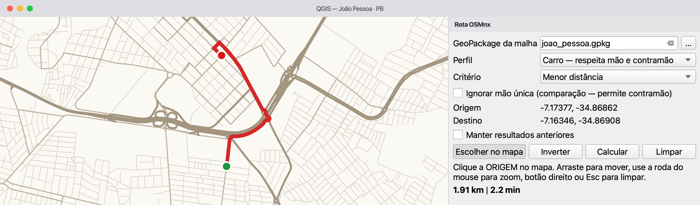
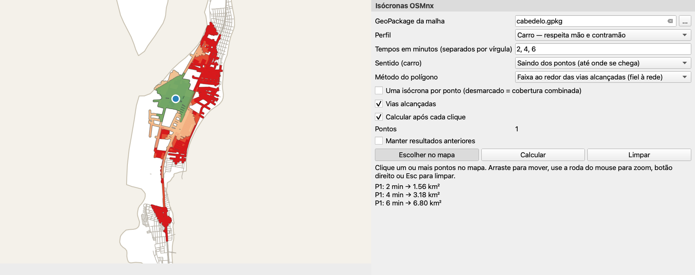

Baixe uma vez a rede viária de um lugar, salve-a num GeoPackage e calcule rotas que respeitam a mão das ruas e as áreas alcançáveis num dado tempo — no seu computador, sem serviço de roteamento nem chave de API. Os resultados são estimativas baseadas nos dados do OpenStreetMap de cada lugar.
⬇ Instalar o plugin ★ Código no GitHub
Visão geral
Quatro algoritmos de Processamento e duas ferramentas interativas no mapa, construídos sobre o OSMnx (download e manipulação do grafo) e o NetworkX (menores caminhos).
Transforma o nome de um lugar num GeoPackage com nós, trechos de rua, arcos dirigidos e o limite do lugar.
As rotas de carro seguem o sentido de circulação registrado no OSM. Um modo de comparação mostra onde um grafo não dirigido andaria na contramão.
Áreas estimadas como alcançáveis em 5, 10, 15… minutos saindo dos pontos ou chegando a eles, com o tempo de chegada em cada rua alcançada.
Painéis laterais deixam o mapa visível: clique os pontos, mova e dê zoom à vontade; o cálculo roda em segundo plano.
| Quero… | Use | Resultado |
|---|---|---|
| trabalhar num lugar novo | 1. Baixar malha viária (OSM) | um GeoPackage com a rede (precisa de internet) |
| conferir um GeoPackage antes de usar | 2. Inspecionar GeoPackage da malha | um relatório HTML: SRC, campos, preenchimento, diagnóstico de roteamento |
| testar uma rota clicando | Rota no mapa (barra de ferramentas) | linha da rota, dois pontos, distância e tempo no painel |
| calcular muitas rotas ou usar num modelo | 3. Menor caminho (Processamento) | camada da rota e as saídas DISTANCE_KM / TIME_MIN |
| ver o que se alcança a partir de lugares, ou até eles | Isócronas no mapa, ou 4. Isócronas (Processamento) para uma camada de pontos | polígonos das isócronas, vias alcançadas e os pontos usados |
As ferramentas no mapa e os algoritmos de Processamento são dois caminhos para o mesmo cálculo: os painéis servem para explorar clicando; os algoritmos servem para camadas de pontos, Executar como processo em lote, o Modelador Gráfico e scripts Python.
Instalação
O QGIS já traz geopandas, networkx, shapely e pyproj. O OSMnx precisa ser acrescentado ao ambiente Python que o QGIS usa, que em geral não é o mesmo de outras instalações de Python do computador.
--user instala na sua pasta pessoal.Abra Complementos → Console Python, cole o código abaixo e tecle Enter. O --no-deps preserva as bibliotecas que vieram com o QGIS (veja abaixo).
from pip._internal.cli.main import main as pip
pip(["install", "--user", "--no-deps", "osmnx"])Depois de reiniciar, rode isto no Console Python. A primeira linha mostra qual Python está em uso; a segunda deve imprimir as versões, sem erros.
import sys, osmnx, geopandas, networkx
print(sys.prefix) # should be inside the QGIS installation
print("osmnx", osmnx.__version__, "| geopandas", geopandas.__version__,
"| networkx", networkx.__version__)Complementos → Gerenciar e instalar complementos, procure por OSMnx Routing & Isochrones. Enquanto for experimental, marque Mostrar também os complementos experimentais nas Configurações. Também dá para usar Instalar a partir do ZIP com um arquivo das releases. Depois confira se OSMnx Routing & Isochrones aparece na Caixa de Ferramentas de Processamento.
--no-deps, e quando deixá-lo de fora?--no-deps, o pip pode substituí-los por versões para as quais os módulos do próprio QGIS (GDAL, scipy) não foram compilados, gerando erros difíceis de rastrear. Se a verificação mostrar ModuleNotFoundError de outro pacote, ou um geopandas anterior ao 1.0 (pacotes antigos do Linux), instale só esse pacote do mesmo jeito, por exemplo pip(["install", "--user", "--no-deps", "requests"]), ou, em último caso, rode o comando sem --no-deps.sys.prefix da verificação deve apontar para dentro da instalação do QGIS (ex.: /Applications/QGIS.app/…, C:\Program Files\QGIS … ou /usr nos pacotes do Linux). Se o OSMnx é encontrado no terminal mas não no QGIS, ele foi para outro Python.--user não funciona--user: retire-o do comando. Em Debian/Ubuntu recentes, o pip pode parar com externally-managed-environment; acrescentar "--break-system-packages" à lista é aceitável aqui, porque o --user só grava na sua pasta pessoal. Com o instalador OSGeo4W no Windows, também dá para usar o OSGeo4W Shell: python -m pip install --no-deps osmnx.Primeiros passos
Um primeiro uso completo em Cabedelo (PB), cidade pequena do litoral: o download leva menos de um minuto numa conexão comum.
Caixa de Ferramentas de Processamento (Ctrl+Alt+T) → OSMnx Routing & Isochrones → 1. Baixar malha viária (OSM). Digite Cabedelo, Paraíba, Brasil, escolha drive e salve num arquivo (não numa saída temporária). Resultado esperado: quatro camadas no projeto — …_boundary, …_edges, …_nodes, …_arcs.
2. Inspecionar GeoPackage da malha gera um relatório HTML. Resultado esperado: SRC EPSG:4326 e a camada arcs como fonte do sentido.
Botão Rota no mapa na barra: clique a origem e depois o destino. Resultado esperado: uma linha vermelha e, no painel, a distância e o tempo estimado.
Botão Isócronas no mapa: clique um ponto. Resultado esperado: polígonos de 5, 10 e 15 minutos, do verde ao vermelho, e suas áreas no painel.
Ferramentas no mapa
As duas ferramentas abrem um painel lateral que não cobre o mapa. Clique marca um ponto, arrastar move o mapa, a roda do mouse dá zoom, botão direito ou Esc limpa. O GeoPackage da rede vem das camadas já abertas no projeto; também dá para escolhê-lo no painel.
 Rota no mapa
Rota no mapaPrimeiro clique = origem, segundo = destino; a rota é então calculada em segundo plano. Inverter troca o sentido; um terceiro clique começa nova origem. Os cliques ficam na camada Pontos da rota.

 Isócronas no mapa
Isócronas no mapaCada clique acrescenta um ponto (P1, P2…) à camada Pontos das isócronas e as isócronas são recalculadas — desmarque Calcular após cada clique para marcar vários pontos antes. O painel lista a área de cada faixa de tempo.

Capturas de tela: plugin 0.1, QGIS 3.44, interface em português.
Referência
Funcionam no diálogo, em Executar como processo em lote, no Modelador Gráfico e pelo Python. Todos os blocos seguem a mesma ordem: quando usar, entradas, saídas, como interpretar o resultado e limitações.
osmnx_routing:download_network
Use quando você precisa da rede de um lugar que ainda não baixou.
| Parâmetro | Descrição |
|---|---|
| Nome do lugar | Município, distrito ou bairro com estado e país, ex.: Campina Grande, Paraíba, Brasil. O Nominatim localiza o lugar e o polígono do limite restringe o download. |
| Tipo de rede | drive vias públicas para carro · drive_service mais vias de serviço · walk rede de pedestres · bike rede cicloviária · all_public todas as vias públicas · all incluindo as privadas. Escolha uma compatível com o perfil que vai usar. |
| GeoPackage de saída | Arquivo a gravar. Uma saída temporária é apagada ao fechar o QGIS; o log avisa. |
edges (uma linha por trecho de rua, para exibição), arcs (uma linha por sentido de circulação, usada no roteamento), nodes e boundary (com a consulta, o nome no OSM e a data do download). Os trechos trazem speed_kph e travel_time.edges sobre um mapa de fundo para ver se as ruas de que você precisa estão lá.~/osmnx/cache.osmnx_routing:inspect_network
Use quando você recebeu ou editou um GeoPackage e quer conferi-lo antes do roteamento. Só precisa do QGIS, não do OSMnx.
| Parâmetro | Descrição |
|---|---|
| GeoPackage da malha | Qualquer GeoPackage; as camadas podem ter prefixo (patos_nodes…). |
| Relatório | Arquivo HTML a gravar. |
maxspeed significa que a maior parte dos tempos vem das velocidades padrão. A fonte do sentido deve ser a camada arcs.3. Menor caminho (mão e contramão)osmnx_routing:shortest_path
Use quando você precisa do caminho entre dois pontos, do comprimento e do tempo estimado.
| Parâmetro | Descrição |
|---|---|
| Perfil | Carro — segue a mão das ruas · Pedestre — ignora o sentido. |
| Critério | Menor distância minimiza o comprimento em metros. Mais rápido (carro) minimiza o travel_time, uma estimativa a partir das velocidades; veja Como funciona. |
| Origem, Destino | Pontos em qualquer SRC. Cada um é ligado ao nó mais próximo da rede, como explicado abaixo. |
| Ignorar mão única | Só para comparação ou diagnóstico: permite a contramão e marca esses trechos. |
| Velocidade a pé | km/h, padrão 4,8. |
wrong_way, comprimento, velocidade, tempo e acumulados; Pontos da rota; os números DISTANCE_KM, TIME_MIN e WRONG_WAY_M.4. Isócronas (áreas de alcance)osmnx_routing:isochrones
Use quando você quer a área que se alcança em alguns minutos a partir de pontos (ou de onde se chega até eles).
| Parâmetro | Descrição |
|---|---|
| Ponto / Camada de pontos | Um ponto clicado, uma camada (escolas, UBS…) ou ambos; o campo de nome identifica cada ponto. |
| Uma isócrona por ponto | Marcado: um conjunto de polígonos por ponto. Desmarcado: uma cobertura combinada de todos os pontos. |
| Sentido (carro) | Saindo dos pontos (até onde se chega) ou chegando a eles (de onde se chega). |
| Tempos em minutos | ex.: 5, 10, 15 (também 5;10;15). |
| Método do polígono | Faixa ao redor das vias alcançadas, ou envoltória côncava dos nós alcançados. |
| Largura da faixa | Metros ao redor das vias, padrão 40. |
drive não tem calçadas nem caminhos: baixe walk ou all para estudos a pé.| Campo | Significado |
|---|---|
speed_kph | Velocidade do trecho em km/h (maxspeed do OSM ou um padrão). |
travel_time | Tempo estimado para percorrer o trecho, em segundos. |
wrong_way | true quando a rota usa o trecho na contramão (só com Ignorar mão única). |
DISTANCE_KM · TIME_MIN · WRONG_WAY_M | Comprimento da rota em km, tempo estimado em minutos e metros feitos na contramão. |
minutes · area_km2 · roads_km | Limite de tempo do polígono, sua área em km² e o comprimento das vias alcançadas em km (ruas de mão dupla contadas uma vez). |
t_start_min · t_end_min | Tempo de chegada em minutos no início e no fim de um trecho alcançado. |
Cada algoritmo tem um id estável; os parâmetros de lista recebem a posição da opção (0, 1, 2…).
import processing
# 1. baixar uma vez (precisa de internet)
processing.run("osmnx_routing:download_network", {
"PLACE": "Cabedelo, Paraíba, Brasil", "TYPE": 2, # 2 = drive
"OUTPUT": "/dados/cabedelo.gpkg"})
# 2. rota de carro, menor tempo estimado (roda localmente)
res = processing.run("osmnx_routing:shortest_path", {
"NETWORK": "/dados/cabedelo.gpkg", "PROFILE": 0, "CRITERION": 1,
"ORIGIN": "-34.8410,-7.0323 [EPSG:4326]",
"DESTINATION": "-34.8417,-7.0371 [EPSG:4326]",
"OUTPUT": "TEMPORARY_OUTPUT"})
print(res["DISTANCE_KM"], res["TIME_MIN"])
# 3. isócronas a pé de uma camada de pontos, uma por ponto
processing.runAndLoadResults("osmnx_routing:isochrones", {
"NETWORK": "/dados/cabedelo.gpkg", "PROFILE": 1, # 1 = pedestre
"POINTS": "/dados/escolas.gpkg", "ID_FIELD": "nome", "SEPARATE": True,
"MINUTES": "5, 10, 15", "OUTPUT": "TEMPORARY_OUTPUT", "ROADS": "TEMPORARY_OUTPUT"})Como funciona
Conhecer estas escolhas ajuda a julgar se um resultado é razoável.
Cada ponto é ligado ao nó mais próximo da rede, medido num SRC métrico local. Para carro, só concorrem os nós do maior componente fortemente conexo — nós a partir dos quais se chega a qualquer outro e se volta, respeitando a mão das ruas —, de modo que sempre existe rota. Para pedestre, usa-se o maior componente conexo. Por isso, um ponto numa rua isolada é ligado ao nó mais próximo da rede principal, que pode estar a alguma distância. Pontos a mais de 5 km de qualquer nó candidato são recusados (rotas) ou ignorados (isócronas).
Menor distância soma o comprimento dos trechos; mais rápido soma o travel_time. A rota mais rápida é a de menor tempo estimado, não uma garantia da viagem real mais curta. Para pedestre a velocidade é constante, então os dois critérios dão o mesmo caminho.
travel_time = comprimento ÷ velocidade. A velocidade é a etiqueta maxspeed do OSM quando existe; senão, um padrão por tipo de via (motorway 100, primary 60, secondary 50, tertiary 40, residential 30, service 20, living_street 10 km/h); os demais tipos usam a média das vias etiquetadas do mesmo tipo, ou 30 km/h. São padrões urbanos para trânsito livre.
A camada arcs tem um registro por sentido de circulação: uma rua de mão dupla gera dois arcos; uma de mão única, um arco. O carro só usa arcos; o pedestre anda nos dois sentidos. A correção disso depende das etiquetas oneway do OpenStreetMap.
Ignorar mão única acrescenta os arcos inversos que faltam e os marca como wrong_way. Mostra o erro que um grafo não dirigido cometeria; o resultado não é uma rota para dirigir.
rotacontramãoorigemdestino

Saindo dos pontos responde “até onde chego daqui em 10 minutos?”. Chegando aos pontos responde “de onde as pessoas chegam aqui em 10 minutos?”: o cálculo roda sobre o grafo invertido. Os dois só diferem para carro, por causa da mão única.
Com uma isócrona por ponto, cada ponto tem seus próprios polígonos, que podem se sobrepor. A cobertura combinada parte de todos os pontos ao mesmo tempo: cada rua recebe o tempo do ponto que a alcança mais rápido pela rede (não o mais próximo em linha reta), e sai um polígono por tempo.

Faixa ao redor das vias alcançadas: cada trecho alcançado recebe um buffer da largura da faixa; o último trecho de cada caminho é cortado em proporção ao tempo restante, supondo velocidade constante nele. O polígono acompanha a rede. Envoltória côncava: um contorno mais suave em torno dos nós alcançados e das pontas cortadas. É mais fácil de ler, mas o interior inclui lugares que a rede não alcança (quadras, água, áreas cercadas).


O primeiro cálculo sobre um GeoPackage lê o arquivo e monta os grafos; os seguintes os reaproveitam enquanto o QGIS estiver aberto. Se o arquivo mudar no disco, ele é lido de novo. Só uma rede fica na memória por vez.
| OpenStreetMap (OSM) | Base colaborativa de dados geográficos. A cobertura e o detalhe variam entre lugares e não são uniformemente completos nem atualizados. |
| OSMnx | Biblioteca Python que o plugin usa para baixar redes do OSM e transformá-las em grafos. |
| Nominatim / Overpass | Serviços do OSM que encontram um lugar pelo nome (geocodificação) e devolvem os dados do mapa dentro de uma área. |
| GeoPackage | Arquivo único .gpkg que pode guardar várias camadas vetoriais e tabelas. |
| SRC | Sistema de referência de coordenadas: como as coordenadas de uma camada se relacionam com lugares na Terra. A rede é gravada em EPSG:4326 (longitude/latitude); as distâncias são medidas num SRC métrico local (UTM). |
| Nó | Ponto da rede: um cruzamento ou o fim de uma rua. |
| Trecho (edge) | Pedaço de rua entre dois nós, usado na exibição. |
| Arco dirigido | Trecho com um sentido de circulação. Uma rua de mão dupla são dois arcos; uma de mão única, um arco no sentido permitido. |
| Grafo dirigido | Rede em que cada ligação tem um sentido; necessário para modelar a mão única. |
| Menor caminho | Caminho de menor custo total; o custo é a distância ou o tempo estimado. |
| Componente fortemente conexo | Maior conjunto de nós em que cada nó alcança todos os outros seguindo o sentido dos arcos. |
| Isócrona | Área estimada como alcançável dentro de um limite de tempo, pela rede e perfil escolhidos. O polígono é uma representação cartográfica. |
| Envoltória côncava | Contorno que se ajusta a um conjunto de pontos mais que a envoltória convexa. Representa os dados; não comprova o acesso a todo lugar do interior. |
Ajuda
Cada item traz a causa provável e o que fazer.
Causa provável: O OSMnx (ou outra biblioteca) não é encontrado no Python do QGIS.
O que fazer: Siga os passos da Instalação, reinicie o QGIS e rode o código de verificação.
Causa provável: O Nominatim não encontrou o lugar, ou o encontrou como ponto ou linha (uma rua, um ponto de interesse).
O que fazer: Escreva o nome como no OpenStreetMap, com estado e país, e use município, distrito ou bairro. Pesquisar o nome em openstreetmap.org mostra o que o Nominatim encontra.
Causa provável: A área é grande, os servidores do OSM estão ocupados, a conexão está lenta ou é preciso um proxy.
O que fazer: Tente mais tarde ou com um lugar menor; confira o proxy em Configurações → Opções → Rede. Não repita o pedido em sequência rápida.
Causa provável: O ponto está a mais de 5 km da rede: fora da área baixada, ou numa camada com o SRC errado.
O que fazer: Clique dentro da área do GeoPackage, confira o SRC da camada de pontos ou baixe um lugar maior.
Causa provável: Os dois pontos se ligam ao mesmo nó (estão muito próximos ou ambos numa rua isolada).
O que fazer: Escolha pontos mais afastados.
Causa provável: O clique foi ligado a um nó da rede principal a alguma distância, ou as etiquetas de mão única faltam ou estão erradas no OSM.
O que fazer: Leia os avisos do log, observe a camada arcs perto do ponto e, se o dado estiver errado, considere corrigi-lo no OpenStreetMap e baixar de novo.
Causa provável: A rede foi baixada como drive e não tem calçadas nem caminhos.
O que fazer: Baixe o lugar de novo com walk ou all.
Causa provável: Salvar camadas temporárias pode perder o SRC e acrescentar um prefixo aos nomes.
O que fazer: Funciona: nomes com prefixo (patos_nodes…) são reconhecidos e camadas lon/lat sem SRC são tratadas como EPSG:4326 (o log avisa). Mantenha uma rede por GeoPackage.
Sobre o autor

Professor do Curso Superior de Tecnologia em Geoprocessamento do Instituto Federal da Paraíba (IFPB).
Marcello Benigno é mestre em Ciências Geodésicas e Tecnologias da Geoinformação pela UFPE e engenheiro civil pela UFCG. Atua há mais de 20 anos no ensino e no desenvolvimento de soluções geotecnológicas de código aberto.
Sua experiência inclui desenvolvimento Web GIS e automação espacial com Python — especialmente PyQGIS, OSMnx, NetworkX e Django —, frontend de mapas web com Leaflet e Vue.js, modelagem de bancos de dados geográficos e arquiteturas em ambiente Linux. Esse trabalho orienta o desenvolvimento de ferramentas que integram análise espacial e geoprocessamento ao ecossistema QGIS.